Portfólió
Bevezető
11.
I.félév
Elektrotechinka
Az elektrotechnika tanulmányozása során megismertem az alapvető elektromos fogalmakat, mint az áram, feszültség és ellenállás, valamint az áramkörök működését. A legnagyobb kihívást a gyakorlati alkalmazások és hibák felismerése jelentette, különösen komplex áramkörök esetén.
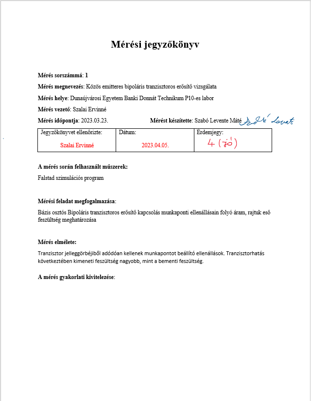 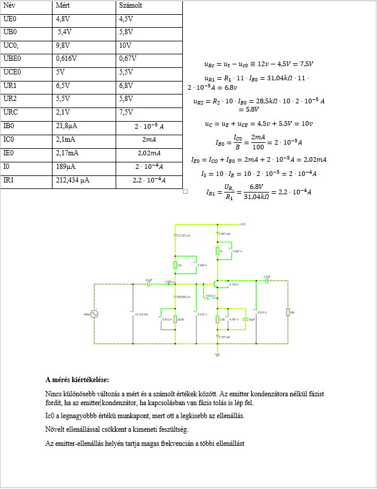Mikrovezérlő programozás
A mikrovezérlő programozás önreflexiója azt jelenti, hogy a programozó értékeli és fejleszti saját munkáját, figyelembe véve a hibák javítását, a kód optimalizálását és a legjobb gyakorlatok alkalmazását. Célja a folyamatos fejlődés és a hatékonyabb programozás.
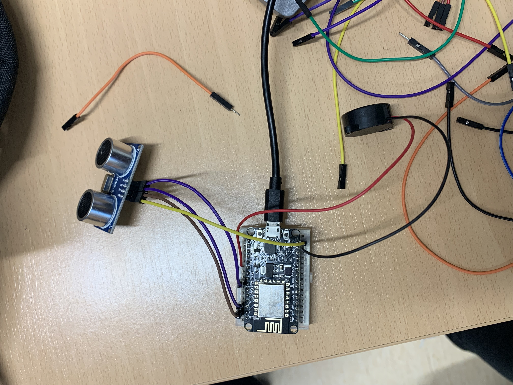 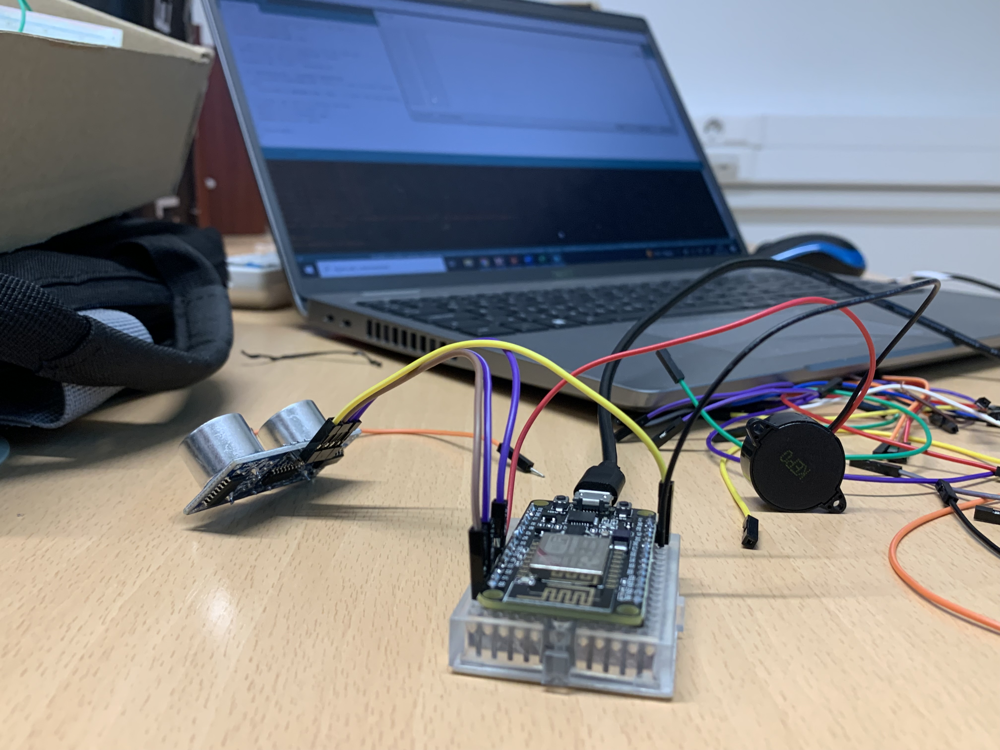II.félév
Digitális áramkörök
A digitális áramkörök tanulmányozása során mélyebb betekintést nyertem az elektronikai rendszerek működésébe. A logikai kapuk (AND, OR, NOT) alapvető szerepet játszanak az áramkörök tervezésében, és a szimulációk, gyakorlati építések segítettek abban, hogy a gyakorlatban is alkalmazzam az elméleti tudást.
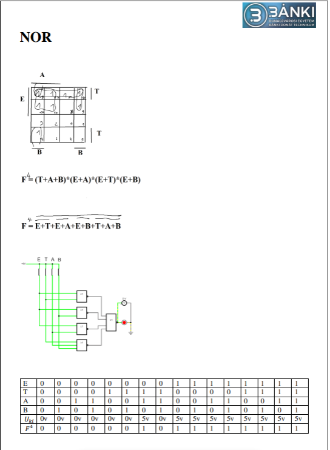 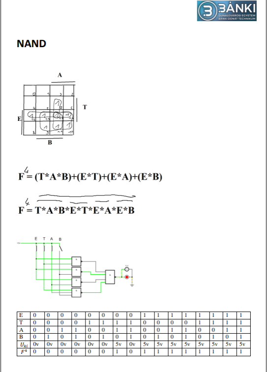 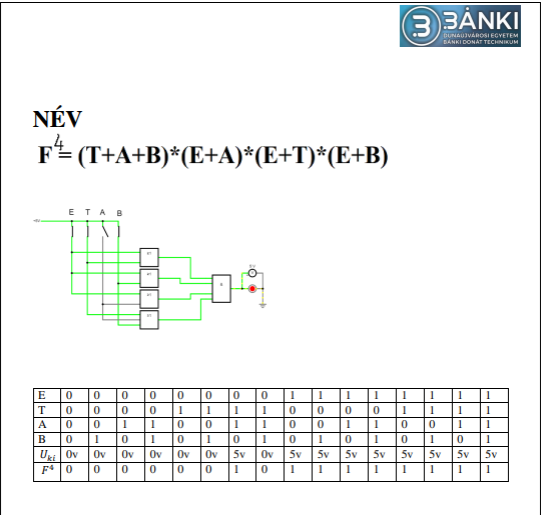Programozás alapjai
A programozás alapjai tantárgy során sokat fejlődtem a kódolás és problémamegoldás terén. Az alapfogalmak, mint változók, ciklusok és függvények, most már érthetőek számomra. A hibakeresés és a program struktúrájának megtervezése révén megtanultam, hogy a programozás nemcsak kódolás, hanem alapos tervezés és türelem kérdése is.
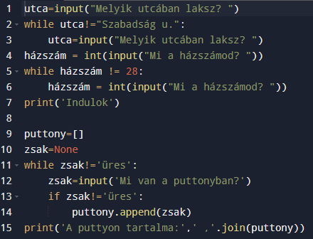 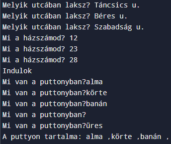12.
I.félév
Adatbáziskezelés
Az adatbázis használata jelentősen megkönnyítette a munkámat az adatok rendszerezésében és kezelésében. Segített gyorsan és pontosan lekérdezni az információkat, miközben biztosította az adatbiztonságot és integritást. A táblák közötti kapcsolatok és az indexek alkalmazása növelte a rendszer teljesítményét, így még nagyobb adatmennyiség esetén is hatékony maradt. Az adatbázis átláthatósága és megbízhatósága jelentősen javította a munkám minőségét.
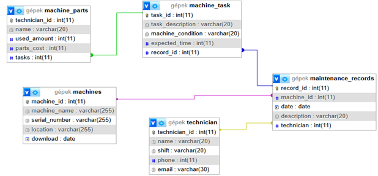 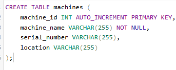 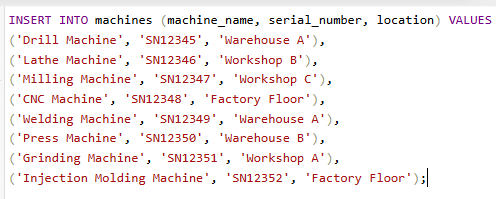 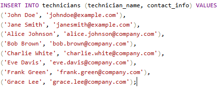Hálózatkezelés
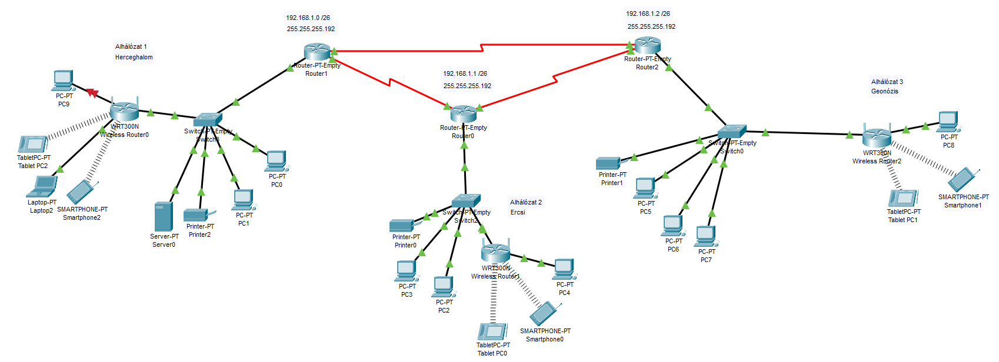A hálózatok tantárgy során alapvető ismereteket szereztem a hálózati protokollok és eszközök működéséről. A gyakorlatok segítettek a hálózati konfigurációk és hibakeresés elsajátításában, miközben a kihívások fejlődésre ösztönöztek. A tantárgy megerősített abban, hogy a hálózati tudás kulcsfontosságú a jövőbeli szakmai pályafutásomhoz.
II. félév
PLC programozás
A PLC programozás tantárgy során megtanultam a vezérlő rendszerek működését és a logikai alapú programozást. A gyakorlati feladatok segítettek jobban megérteni a relés kapcsolásokat és a vezérlési struktúrák alkalmazását. Ráébredtem, hogy a PLC programozás precíz tervezést és hibamentes kódot igényel a hatékony automatizálás érdekében.
Számítógépes szimuláció
A számítógépes szimuláció tantárgy során megtanultam, hogyan modellezhetjük és szimulálhatjuk a valós rendszereket. A gyakorlati feladatok segítettek megérteni a szimulációk alkalmazását a problémák gyorsabb elemzésében és megoldásában.
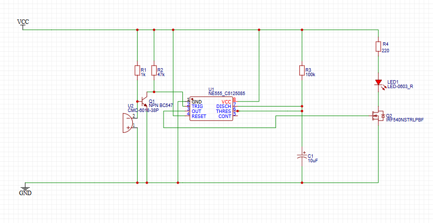 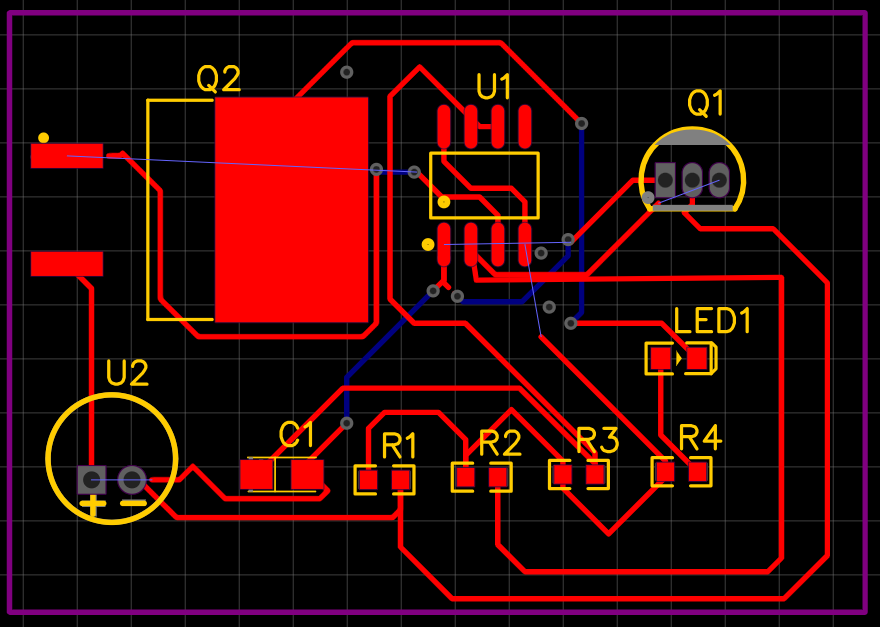13.
I.félév
Munkavállalói idegen nyelv
A munkavállalói idegen nyelv tantárgy során fejlődtem a munkahelyi kommunikációban. Megtanultam a szakmai kifejezéseket és a nyelv használatát a munkahelyi környezetben, ami segít a nemzetközi kapcsolatok és feladatok hatékony kezelésében.

IoT
Az IoT tantárgy során megértettem, hogyan működnek az okos eszközök és hogyan kapcsolódnak össze a hálózatok, érzékelők és felhőalapú rendszerek. Sokat tanultam az adatok gyűjtéséről és feldolgozásáról, ami alapot ad az IoT alkalmazások fejlesztéséhez.
 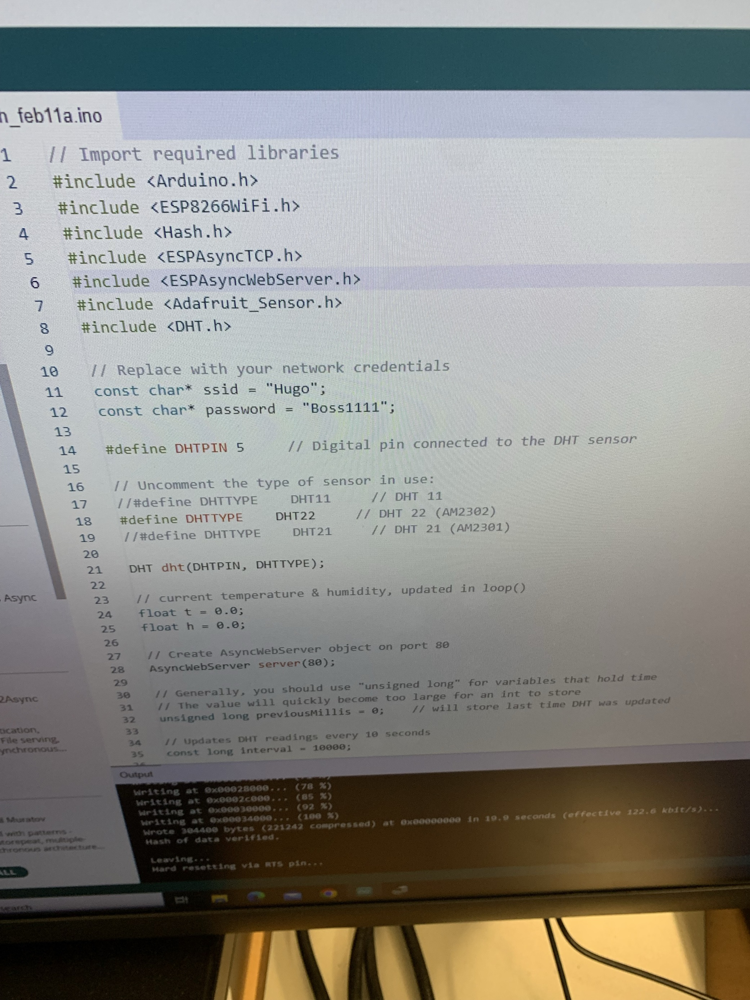
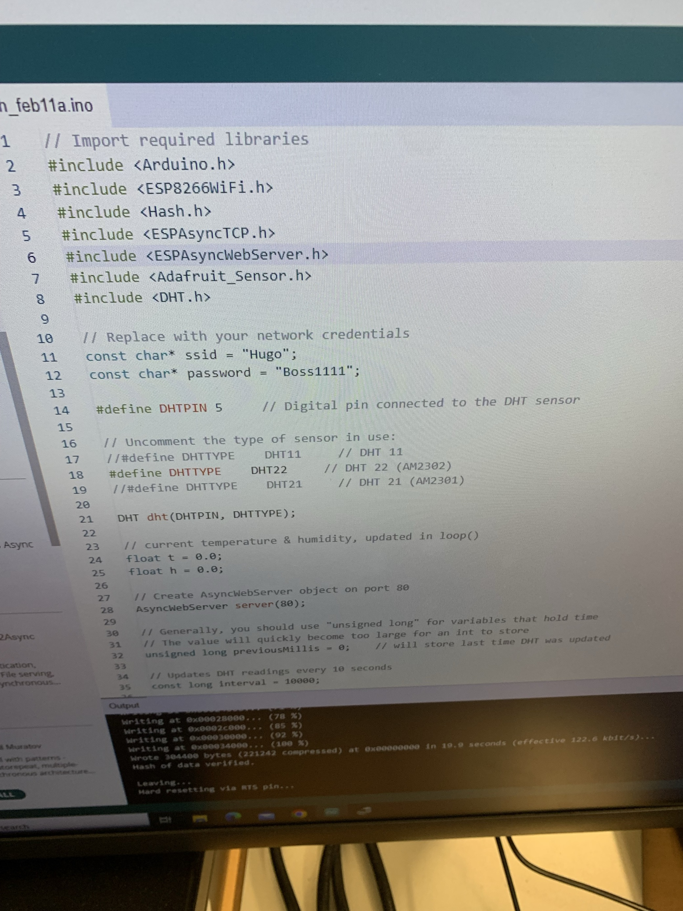
II. félév
Programfejlesztés
A programfejlesztés tantárgy során mélyebb megértést nyertem a szoftverfejlesztési folyamatokról, az algoritmusok tervezéséről és az objektumorientált programozásról. Az elméleti tudás mellett gyakorlati tapasztalatokat szereztem a különböző programozási nyelvek és fejlesztői eszközök használatában. A tantárgy segített jobban átlátni a szoftverek fejlesztési ciklusát, és fejlesztette a problémamegoldó képességemet.
 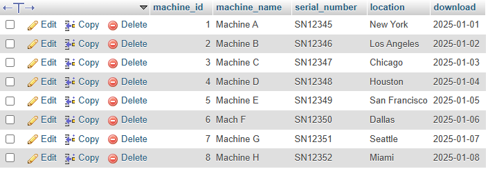
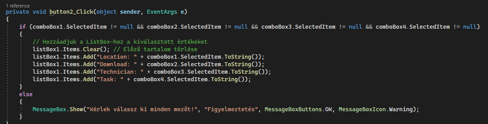
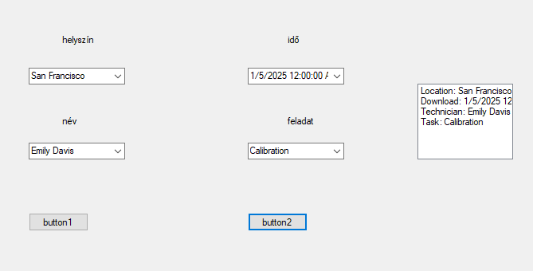
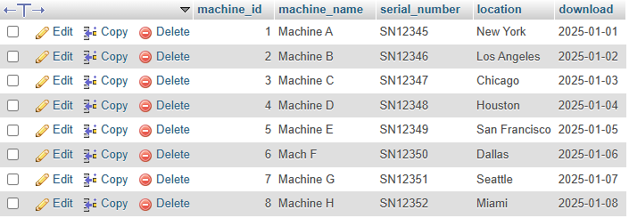
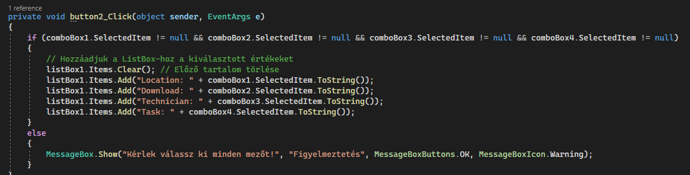
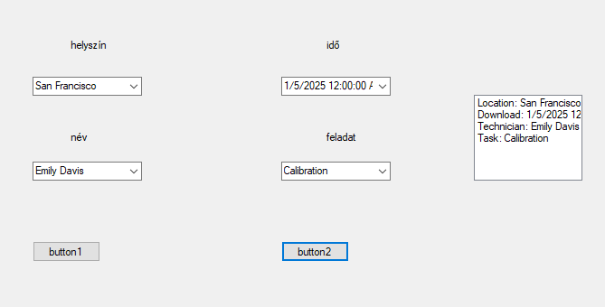

Robottechnika CAD/CAM
A Robotechnika CAD/CAM tantárgy segített elsajátítani a számítógépes tervezés és gyártás alapjait. A CAD szoftverek használata során fejlesztettem a tervezési készségeimet, míg a CAM rendszerekkel a gyártási folyamatok megértését gyakoroltam. A tantárgy erősítette a problémamegoldó képességemet, és hasznos alapot adott a jövőbeli mérnöki munkámhoz.

Önreflexió
Az Ipari Informatika technikus szakma során szerzett tapasztalataim segítettek abban, hogy átfogó ismereteket szerezzek az ipari rendszerek automatizálásáról, a PLC programozásról, valamint a szenzorok és vezérlő rendszerek integrálásáról. A tantárgyak és gyakorlati feladatok révén fejlesztettem problémamegoldó képességemet, és megtanultam hatékonyan alkalmazni az informatikai megoldásokat a gyártási környezetekben. Most már képes vagyok részt venni komplex ipari rendszerek tervezésében és karbantartásában, miközben tisztában vagyok a modern automatizálás és a számítástechnika szerepével az ipari termelésben.